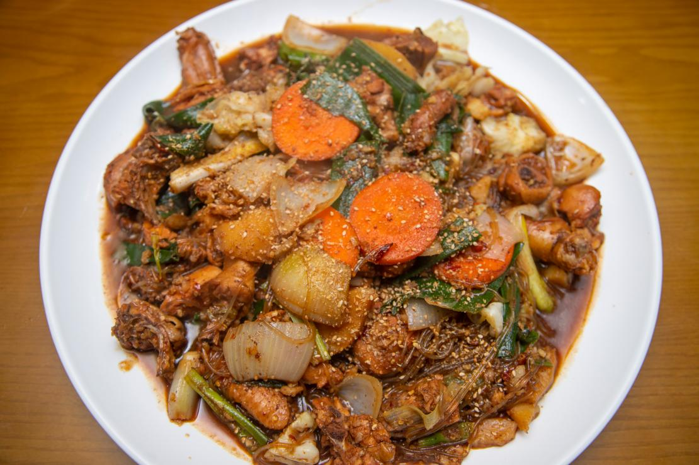
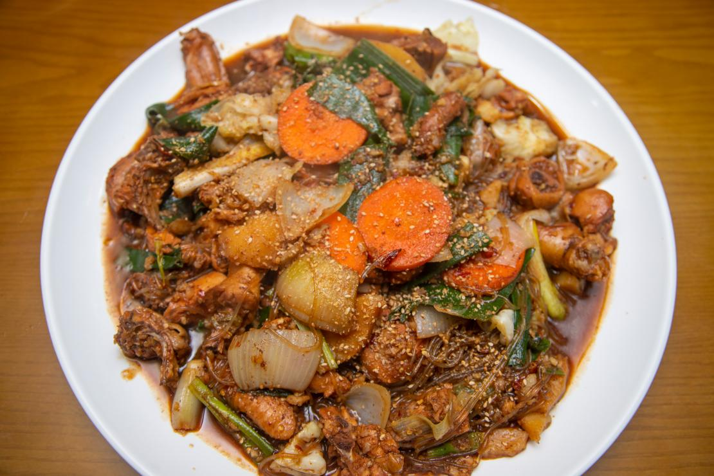

반응형 웹 디자인
반응형 웹
오늘 점심은 안동찜닭입니다.
안동찜닭은 한국 경상북도 안동 지역에서 유래한 전통 요리로, 닭고기를 주재료로 한 찜 요리입니다. 이 요리는 주로 큰 냄비에 닭고기와 다양한 야채, 당면을 넣고 양념장과 함께 끓여서 만듭니다. 양념장은 간장, 고추, 마늘, 설탕 등을 혼합하여 달콤하면서도 매콤한 맛을 내는 것이 특징입니다. 안동찜닭은 1980년대에 안동 구시장에서 처음 등장했다고 알려져 있으며, 이후 전국적으로 인기를 끌게 되었습니다. 이 요리는 비교적 짧은 시간 안에 조리할 수 있으며, 대중적인 맛과 풍부한 영양소로 많은 사람들에게 사랑받고 있습니다. 찜닭을 만들 때 사용하는 야채로는 감자, 당근, 양파, 대파 등이 있으며, 여기에 당면을 추가하여 쫄깃한 식감을 더합니다. 닭고기는 보통 큰 덩어리로 썰어 넣어 푹 익혀서 부드러운 질감을 유지합니다. 양념장은 각 가정이나 음식점마다 조금씩 다르게 조리되지만, 기본적으로 간장과 설탕, 고추를 사용하여 달콤하고 매콤한 맛을 냅니다. 안동찜닭은 단독으로 먹어도 훌륭하지만, 밥과 함께 먹으면 더욱 맛있습니다. 또한, 남은 양념에 밥을 비벼 먹거나, 추가로 야채를 더 넣어 한 번 더 끓여 먹는 등 다양한 방식으로 즐길 수 있습니다. 이처럼 안동찜닭은 그 맛과 풍부한 재료 덕분에 한국의 대표적인 찜 요리 중 하나로 자리 잡았습니다. 안동찜닭은 현재도 안동 지역뿐만 아니라 전국의 다양한 음식점에서 쉽게 찾아볼 수 있으며, 외국에서도 한국 음식점이나 한식당을 통해 즐길 수 있게 되었습니다. 이 요리는 전통적인 맛과 현대적인 조리법이 조화를 이루어, 한국의 다양한 찜 요리 문화 중에서도 특히 인기 있는 요리로 사랑받고 있습니다.
 
